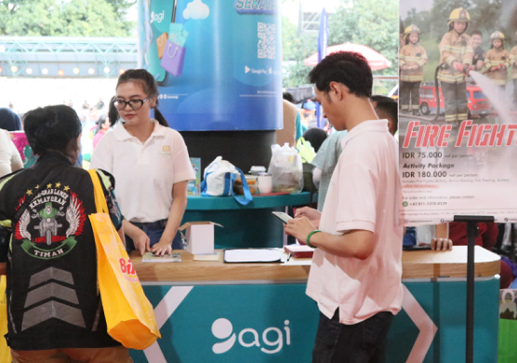

BUDAYA

Parade Imlek Nusantara 2026, Perayaan Budaya Satukan Keberagaman Indonesia
RM.id Rakyat Merdeka - Pemerintah menegaskan komitmennya menjaga kebhinekaan dan persatuan bangsa melalui parade Imlek Nusantara 2026 yang digelar di Lapangan Banteng, Jakarta, Sabtu (28/2/2026).
Kegiatan ini menjadi puncak Festival Imlek Nasional 2026 yang berlangsung sejak 22 Februari hingga 1 Maret 2026. Parade dibuka secara resmi oleh Wakil Menteri Ekonomi Kreatif/Wakil Kepala Badan Ekonomi Kreatif Irene Umar.